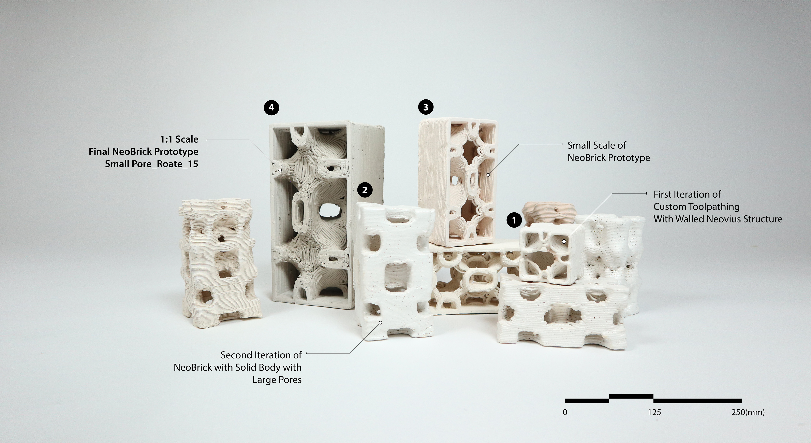
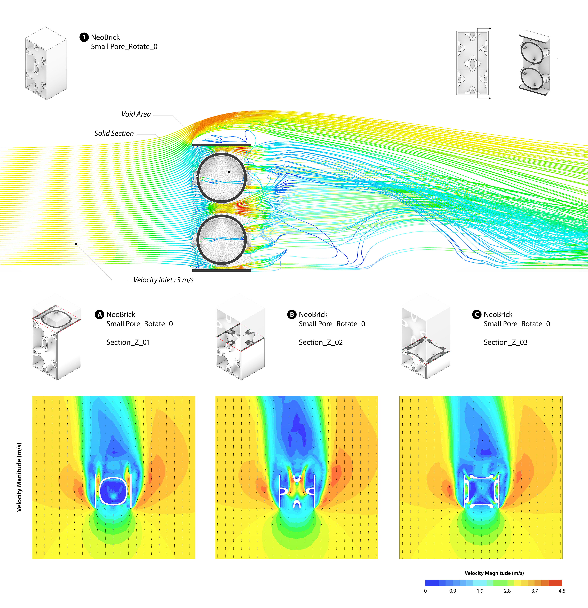
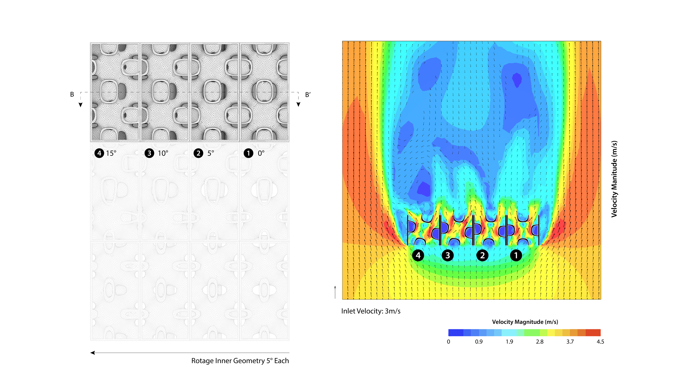
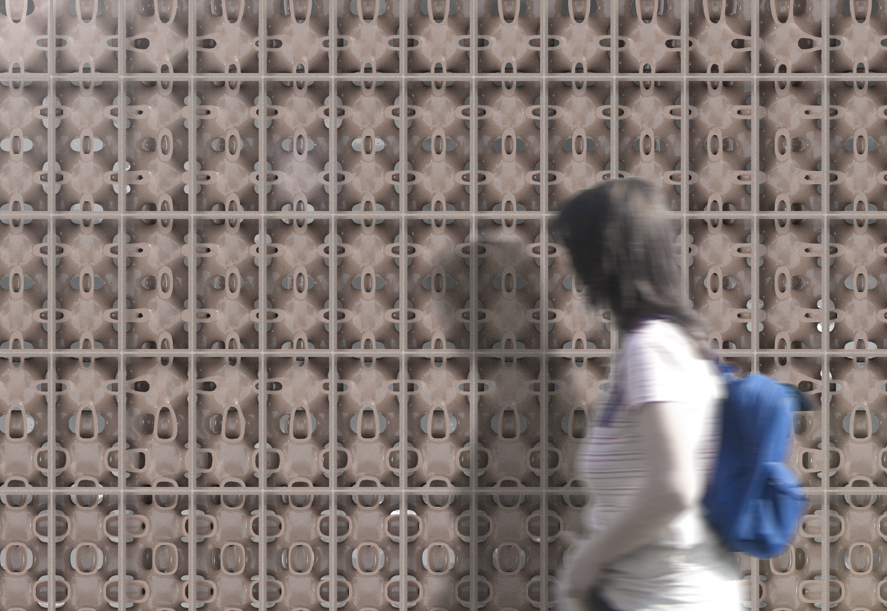
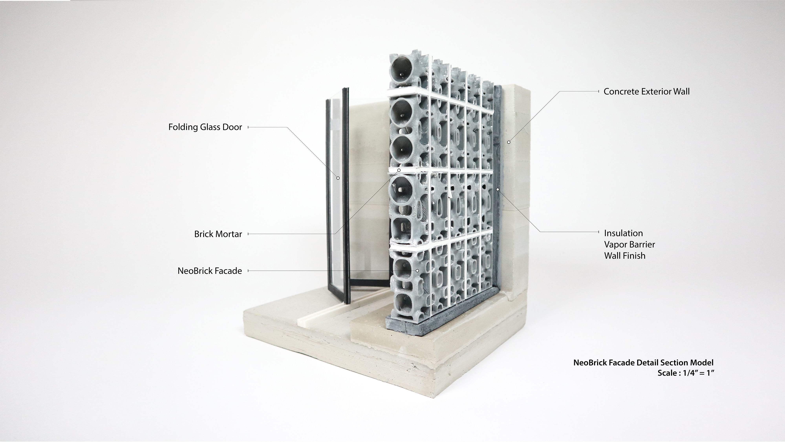

Ji Yoon Bae
"How passive architectural components, informed by new sustainable materials and advanced digital technologies,
improve building performance in response to the current socio-climate contexts?"
"How passive architectural components, informed by new sustainable materials and advanced digital technologies,
improve building performance in response to the current socio-climate contexts?"
Ji Yoon Bae is a Ph.D. in architecture student at the Weitzman School of Design, University of Pennsylvania. His interdisciplinary work examines research methodologies that develop and evaluate environmental performance-driven architectural components. In addition, his research asks how passive architectural components, informed by new sustainable materials and advanced digital technologies, improve building performance in response to the current socio-climate contexts. Before joining the University of Pennsylvania, Ji Yoon completed an MS in Matter Design Computation from Cornell University and an M.Arch from Syracuse University.
jibae@design.upenn.edu
Email Me!Environmentally Informed 3d-Printed Lattice Brick for Modulating Indoor Thermal Comfort
Ji Yoon Bae, Jenny Sabin
Full Paper NeoBrick is a 3D clay-printed brick prototype that explores generative design processes coupled with environmental inputs as design drivers. Maintaining indoor thermal comfort by utilizing a passive cooling strategy contributes to energy efficiency and healthy indoor air environment in a specific climatic context such as tropical climate zones. In this aspect, clay is a locally accessible material that brings thermal benefits for cooling due to the low heat conductivity. Moreover, environmental simulations and additive manufacturing techniques are emerging as key drivers for designing and testing a performance-driven architectural systems. This paper introduces an integrated research workflow that develops a Triply Periodic Minimal Surface (TPMS)- informed clay-printed brick system. The brick geometries are informed by environmental feedback including airflow and heat transfer performance. To articulate this environmentally performing clay brick prototype, first, this research leverages computational fluid dynamics (CFD) and heat transfer analysis to inform and evaluate brick geometries. Second, the research utilizes an additive manufacturing technology with customized toolpaths for fabricating non-standard brick geometries. Lastly, the research delivers a possible residential architectural application in a specific climate condition, Ho Chi Minh City, Vietnam, to suggest a possible adaptation of the passive ventilation system for enhancing the thermal environment and energy efficiency.
   HoloWall is a wall assembly that integrates mixed reality (MR) protocols with nonuniformly sized lumber to develop a customized hollow-core cross-laminated timber (HCCLT). The performance-driven design workflow leverages the MR technology and tiling automation of nonuniform wood boards to guide material processing and fabrication of a customized HCCLT prototype. This paper proposes to expand the usage and the viability of customized HCCLT as a structural component. Upcycling locally salvaged wood elements, the prototype develops a material language of lamination that peels away in calibrated gradients to generate structural and visual porosity. By engaging with the computational environment and the physical making process through the MR workflow, users are able to explore an accessible design streamline.
To test this hybridized design approach, the paper investigates the following objectives: 1) utilize locally sourced salvaged wood boards in response to the emerging deconstruction practice to minimize material waste; 2) leverage MR-aided process for the utilization of nonuniform wood materials and the fabrication of prototypes; 3) implement design parameters such as structural and program requirements for customization; 4) develop a semiautomated wood board packing protocol for nonuniform materials; and 5) propose a performance-driven load-bearing HCCLT wall at housing scale as a further step of architectural application. This MR-informed process facilitates the reuse of discarded wood wastes for the customized HCCLT assembly and provides an intuitive workflow for expert and nonexpert users.